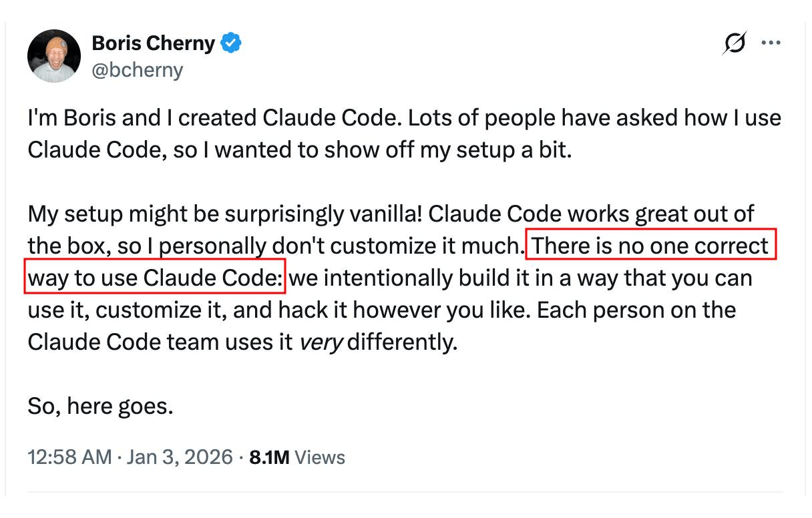
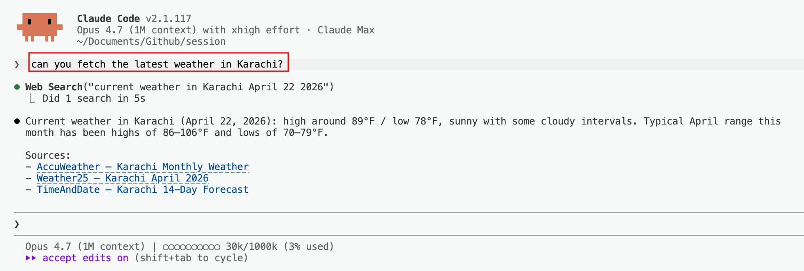
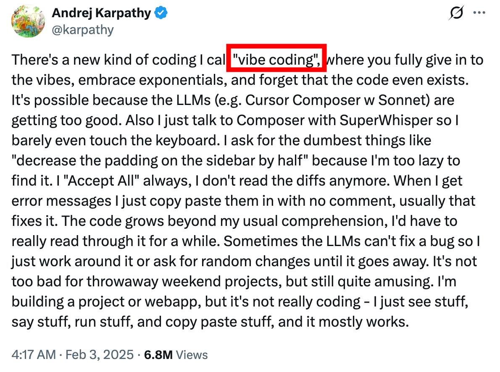
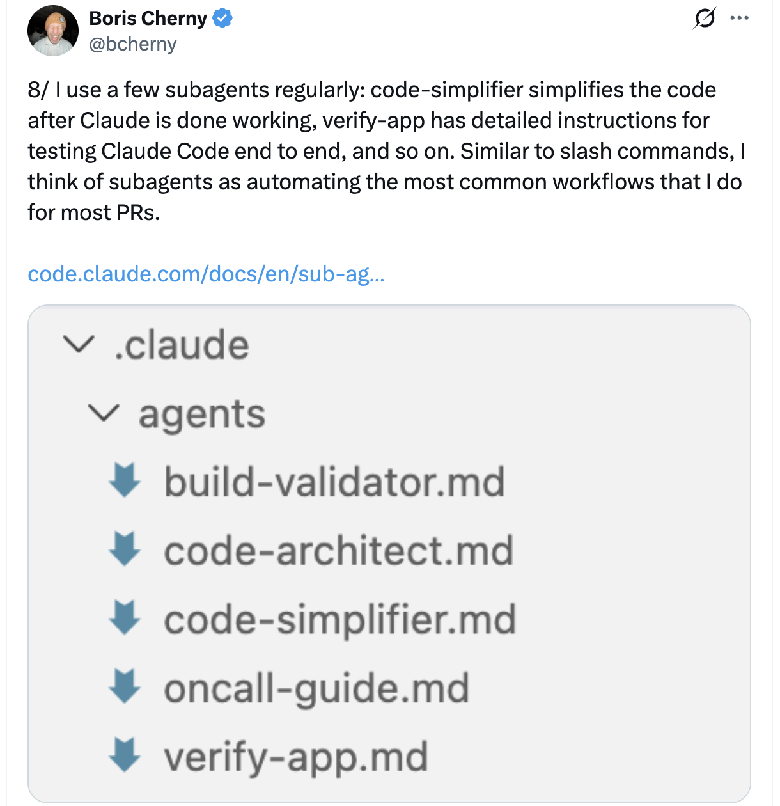

progressive disclosure — feeding the AI only what it needs right now, not everything upfront
orchestration — coordinating several AI agents like a conductor leads a band
dumb zone — the stretch where AI has too much context and starts thinking worse, not better
agentic workflows — AI that plans, acts, checks its work, and adapts — multi-step on its own
harness — the scaffolding around the model — files, terminal, tools — that turns a chatbot into a worker
compaction — auto-summarizing old chat so the AI keeps going without hitting its memory ceiling
context window — the AI’s working memory — how much it can “see” at once before older details fall off
MCP — a universal adapter letting AI talk to your tools (GitHub, Slack, databases)
hooks — auto-triggers that run your rules before or after the AI does anything
context rot — quality decay as the conversation drags on and earlier details blur
prompt engineering — the craft of phrasing requests so the AI understands exactly what you mean
AI slop — low-effort, generic AI output that looks polished but says nothing
inference — the moment the model actually runs to produce an answer. Training is when the model learned (once, long ago). Inference is the model answering you, right now
hallucination — when AI confidently makes up facts that sound true but aren’t
context bloat — overstuffing the AI’s memory so it slows down and loses focus
one-shot prompting — giving the AI one example and asking it to follow the same pattern
token burn — wasting expensive AI “words” on unnecessary back-and-forth or bloated prompts
vibe coding — describing what you want in plain English and hoping the AI nails it
agentic engineering — building guardrails so AI acts like a reliable teammate, not a gamble
Difference between GPT and ChatGPT?
discuss

Boris Cherny (creator of Claude Code) — different teams use Claude Code completely differently.
There is no single “correct” way. But there are patterns worth understanding.
What is Claude Code?
Model (Brain 🧠 — e.g. Opus, GPT) +Harness (Body 💪 — e.g. tools, MCP, memory)
🦜
“Stochastic Parrots”
Stochastic means random/probabilistic — models don’t know the answer, they sample from a probability distribution.
Prompt: “The sky is ___”
blue
62%
clear
14%
dark
8%
falling
0.3%
Each run the model samples — temperature controls how widely it samples.
Bender, Gebru, McMillan-Major, Mitchell — On the Dangers of Stochastic Parrots (2021)
Every model — no matter how new — has a knowledge cut-off. Events after that date simply do not exist inside the model.
Opus 4.7 — Anthropic
Knowledge cut-off: January 2026
Released 2026-04-17
GPT-5.5 — OpenAI
Knowledge cut-off: August 2025*
Released 2026-04-23 — brand-new, but still has a cut-off.
Gemini 3.1 Pro — Google
Knowledge cut-off: January 2025
Released 2026-02-19
*OpenAI has not officially published GPT-5.5’s cutoff; shown value is the published cutoff of GPT-5.4 (released 6 weeks earlier), used as best-available proxy.
🧠 Limitations
The raw model has no real-time access — no internet, no files, no clock.
A horse harness. A model harness.
Same verb.
💪 Harness — the body around the brain
🧑💼
Agents — the specialists
A dedicated Claude worker — own context, tools, focus.
✅ fresh working memory per run
🎯
Skills — the know-how
What the specialist (or Claude) can actually do.
✅ progressive disclosure — loaded on demand
📘
Workflows — the instruction manual
Repeatable step-by-step recipes — like an AC install guide.
✅ reproducible recipes
📝
CLAUDE.md — your memory
Knowledge you provide to the model.
⚠️ 200-line problem
💭
Context — the working memory
What Claude holds in his head now — fresh every new chat session.
20% of 1M tokens
⚠️ dumb-zone problem
💪 Harness — the body around the brain
✋
Tools — the hands
Built-in: Read, Edit, Bash, WebSearch.
🔌
MCP — the adapters
USB-C for AI — plug in external tools (databases, browsers, APIs).
e.g. 👁️ Claude in Chrome
🛡️
Permissions — the guardrails
Allow / ask / deny for tool use.
🪝
Hooks — the reflexes
Deterministic scripts that fire on events.
📝
System Prompt — Claude’s memory
Knowledge Anthropic bakes in.
e.g. identity · tone · safety
✅ always on
🎉 Yayyyyy! Problem solved with harness
The harness reaches out via WebSearch and fetches a real answer from live sources.

?
Really?
💪 Non-determinism — Doesn’t always use its tools
Similar prompt — but this time the model decided not to use the tool.
💪 Non-determinism — Tools can fail
The model first tried one source — it failed (403) — so it fell back to another.
❌ Coming back to problem statement
❌ Single source of truth
The model does not always follow the same path.
❌ Repetitively
Model sometimes failed/forgot to use the tool.
Vibe Coding

Andrej Karpathy — OpenAI founding team · former Director of AI at Tesla · founder of Eureka Labs.
Opens an interactive menu — pick "Create new agent" and the CLI drafts the agent file for you.
Creates .claude/agents/<name>.md — a plain markdown file anyone can edit.
Demo
🎉 Yayyyyy! Problem solved with agents
?
Not so fast...
✅ Coming back to problem statement
✅ Single source of truth
The agent will always call the Open-Meteo API — no more source drift.
❌ Repetitively
It’s not guaranteed that Claude will always call this agent.
Agent config fields with frontmatter
FieldDescriptionEnforced by
name RecommendedUnique identifier — e.g. weather-agentharness
description RequiredWhen to invoke. Use "PROACTIVELY" for auto-invocationprompt
modelhaiku, sonnet, opus, or inherit (default). weather-agent uses sonnetharness
toolsAllowlist of tools. weather-agent allows WebFetch, Read, Write, etc.harness
skillsSkills preloaded into agent context at startup — weather-agent preloads weather-fetcherharness
maxTurnsMaximum agentic turns before the agent stops. weather-agent uses 5harness
memoryPersistent memory: user, project, or local. weather-agent uses projectharness
colorVisual color in task list. weather-agent uses greenharness
The skills: field is what makes the agent special. It preloads any-skill directly into the agent’s brain at startup — before the agent has received a single instruction.
Claude Code Best Practice Tips & Tricks
Claude Code Best Practice Tips & Tricks

📝 CLAUDE.md
CLAUDE.md
Your project's persistent memory — what Claude reads every session.
✅ Loaded into every session📚 Project knowledge, persisted👥 Team-shareable via git
The model's working memory — what it can see in this moment.
🪟 Limited budget📂 Fill it intentionally🧹 Compact at ~50%
Topic 2
🎓 Skills — What the Weather Reporter Knows
Skills are the specific things the reporter has been trained to do. Our reporter has two: fetch the data, and render it as a card.
The Training Manual
Think of it like this
When someone joins your team, they have a role (agent), but they also go through specific training modules — how to use the CRM, how to write a proposal, how to run a standup. Each training module is a skill.
The Weather Reporter's Two Skills
🌡️
weather-fetcherKnows exactly how to query Open-Meteo, extract the temperature value, and return it in the right format. This skill is preloaded into the agent's brain at startup.
🖼️
weather-svg-creatorTakes a temperature value and renders a visual SVG weather card. Writes the output file to orchestration-workflow/weather.svg. This skill is invoked directly by the command.
Each skill has its own knowledge and methods. The reporter uses the right skill for the right step. Claude works the same way.
When to Turn Something Into a Skill
Tip from Boris Cherny (creator of Claude Code) — Feb 1, 2026
"If you do something more than once a day, turn it into a skill."
The rule is simple: anything you're explaining to Claude over and over is a skill waiting to be written down. The weather reporter's skills are a perfect example:
🌡️
Fetch Dubai's temperatureSame API, same parameters, same format every time. That's weather-fetcher.
🖼️
Render the weather cardSame SVG template, same output path, same design every time. That's weather-svg-creator.
📝
"Format my weekly update"Same sections, same tone, same length every Monday. That's a skill waiting to be written.
Takeaway
Skills are how repetition becomes reliability. Write it down once, and Claude does it the same way forever — or until you update the skill.
Why Separate Agents and Skills?
Agent = The Person
The weather-agent is the person with the job title "Weather Reporter".
It defines the role and behavior: use Open-Meteo, return temperature, track history in memory.
Skill = The Training
The weather-fetcher skill is the specific training on how to fetch weather data.
It contains exact instructions:
Call this specific API URL
Extract current.temperature_2m from the response
Return value + unit in this exact format
The Power
One agent can have multiple skills, and one skill can be used by multiple agents. Skills are reusable building blocks. Agents are the people who use them.
How to Create Your Own Skill
Skills are plain markdown files. If you can write a recipe, you can write a skill.
The File
Create .claude/skills/<your-skill-name>/SKILL.md in your project. That's it.
1
Pick a repeated taskSomething you explain to Claude more than once. "Fetch Dubai weather" is a perfect first skill.
2
Make a folder and a SKILL.mdPath: .claude/skills/weather-fetcher/SKILL.md. Or ask Claude: "Turn this into a skill."
3
Write the recipe in plain EnglishSame words you'd use to explain it to a coworker. Skills are instructions, not code.
# File: .claude/skills/weather-fetcher/SKILL.md---name: weather-fetcherdescription: Fetch current temperature for Dubai from Open-Meteo APIuser-invocable: false---
Fetch the current temperature for Dubai, UAE.
1. Call the Open-Meteo API:
https://api.open-meteo.com/v1/forecast?latitude=25.2048&longitude=55.2708¤t=temperature_2m
2. Extract current.temperature_2m from the response
3. Return: "The temperature in Dubai is {value}{unit}"
Takeaway
The skill contains instructions, not code. It tells Claude how to do something using its existing tools.
Skill Config Fields
The small config block at the top of a SKILL.md (the "frontmatter") controls how the skill behaves:
nameDisplay name and /slash-command. Defaults to directory name
description RecommendedWhat the skill does — shown in autocomplete, used for auto-discovery
user-invocableSet false to hide from / menu — weather-fetcher uses this because it's agent-only
allowed-toolsTools allowed without permission prompts when skill is active
modelModel to use: haiku, sonnet, or opus
contextSet to fork to run in isolated subagent context
Two Ways to Use Skills
User-invocable: appears in / menu, user runs it directly (like weather-svg-creator). Agent-preloaded: set user-invocable: false, then list it in an agent's skills: field — it becomes domain knowledge injected into that agent (like weather-fetcher).
Topic 3
🧠 Context — The Reporter's Brain
Now that you've met the reporter and know their skills, let's understand what they can actually hold in mind at once. Every agent — including the weather reporter — gets its own fresh brain.
Claude's Brain
Think of it like this
Imagine Claude has a brain that holds everything it's aware of right now — your question, every file it's opened, every tool result, every word it's said back to you. If a thought isn't in the brain, Claude can't use it. Simple as that.
When the weather-agent is dispatched, it gets its own fresh brain — and weather-fetcher is pinned into it at startup via the skills: field. Everything you give Claude in a conversation lands in its brain:
💬
Your messagesEvery question, clarification, and follow-up
📄
Every file Claude opensRead a 500-page PDF? All of it is in the brain now.
🔧
Every tool resultWeb searches, command output, screenshots — all held in memory
Two Things Every Non-Engineer Should Know
1. The brain is finite. It can hold about 1 million tokens — roughly 750,000 words, or a short novel. Big, but not infinite. 2. The brain empties at the end of every chat. When you start a new conversation, Claude remembers nothing from the last one unless you tell it again.
What Loads at Session Start
The moment you open Claude Code, certain things land in Claude's brain before you've typed a word. The rest waits in the wings — only loaded when you actually need it. This is called progressive disclosure.
📋
CLAUDE.md — full contentStanding instructions, every line. Always pinned in the brain at startup.
🎓
Skills — descriptions onlyClaude knows which skills exist and what each does. At startup, Claude knows aboutweather-fetcher; the full content loads when the agent runs.
👤
Agents — descriptions onlyThe roster of specialists. The weather-agent's full system prompt loads when it's dispatched.
The One-Liner
Only descriptions of skills and agents are loaded at startup — the rest is fetched on-demand. That's progressive disclosure. It keeps the brain light.
Keep the Brain Clear
The more stuff crammed into Claude's brain, the harder it is to focus on what matters. This is called context rot — performance drops as the brain gets crowded.
Tip from Thariq (Anthropic) — Apr 16, 2026
"Every turn is a branching point." After Claude finishes a response, you don't have to just keep typing. You have five options — and four of them exist to keep the brain clear.
Option
When to use it
Continue
Same task, everything in the brain still matters
Rewind (tap Esc twice)
Claude went down a wrong path — jump back and try again
/compact
The brain is bloated — summarize and keep going
/clear (fresh chat)
Starting a truly new task — wipe the brain clean
Subagent
Next step will make a mess — send a helper to do it in their own brain
Rule of Thumb
When you start a new task, start a new chat. Don't let yesterday's thinking clutter today's brain.
How to Manage Your Context
You can't create the context — it's just there, the moment you open a chat. But you can see how full it is, trim it down, or wipe it clean. Three commands give you full control.
The Commands
/context shows you how full the brain is. /compact summarizes it. /clear wipes it.
1
Check how full the brain is — /contextShows a breakdown of how many tokens are used and what's taking up space (system prompt, tools, files, conversation).
2
Trim or reset — /compact or /clear/compact keeps a short summary so you can continue. /clear wipes everything for a truly fresh start.
3
Start the next task freshThe brain is light again — re-state the goal, and Claude works without yesterday's clutter.
# The three context commands/context# Check how full the brain is right now/compact# Summarize what's there and keep going on top/clear# Wipe the brain — fresh chat, nothing remembered
Takeaway
Check first with /context. Trim with /compact. Reset with /clear when starting a new task.
Topic 4
📋 CLAUDE.md — The Reporter's Pocket Rulebook
The weather reporter consults this at the start of every shift — even though their brain resets overnight. It's the standing instructions pinned in that brain before you've said a word.
The Employee Handbook
Think of it like this
Imagine hiring a brilliant new assistant every single morning — someone who forgets everything at 5pm. You'd get tired of re-explaining "we say clients, not customers" and "always CC my manager" over and over. So you pin those rules into their brain before the day starts. That's CLAUDE.md: a short list of standing instructions Claude reads first, every time.
For the weather reporter, CLAUDE.md might contain: "Always report in Celsius unless asked. Always cite Open-Meteo as the source." Here's a non-technical example:
# CLAUDE.md## About this project
This is the Q2 marketing campaign brief — targeting small business owners.
## How I want you to talk to me
- Always explain technical terms in plain language
- Before you run any command, tell me what it does in one sentence
- If I ask for an opinion, give me one — don't hedge
## House rules
- We say "clients" not "customers"
- Never edit files in the /archive folder
- Keep emails under 150 words
You Don't Have to Write It From Scratch
Claude can draft your first CLAUDE.md for you. The next slide shows how.
How to Create Your CLAUDE.md
You don't need to write CLAUDE.md by hand. Claude can look at your project and draft one for you.
The Command
Type /init inside Claude Code, in your project folder. Claude does the rest.
1
Type /init in Claude CodeMake sure you're in your project folder. No other setup needed.
2
Claude reads your projectIt looks at your files, folder names, and README to figure out what the project is about.
3
Claude drafts a starter CLAUDE.mdSaved to the root of your project. Open it and edit like any other document.
Think of it like this
Running /init is like asking the new hire to read everything on the shared drive before you meet them — they walk in already knowing the project's shape, and they write up what they learned as a handbook for future Claude.
# The 60-second workflow/init# Claude drafts the fileCLAUDE.md appears # In your project root
open, edit, save # Tweak it like any doc
Takeaway
You'll keep improving it over time. But /init gets you to a working draft in under a minute.
Grow CLAUDE.md With Every Mistake
Tip from Boris Cherny (creator of Claude Code) — Feb 1, 2026
"After every correction, end with: Update your CLAUDE.md so you don't make that mistake again. Claude is eerily good at writing rules for itself."
The CLAUDE.md isn't something you write once and forget. It's a living memory of every lesson you've ever had to teach Claude. The workflow:
1
Claude makes a mistakeIt uses the wrong tone, touches a file you didn't want touched, skips a step
2
You correct it"Actually, we never write in all caps. And always confirm before sending."
3
You say: "update your CLAUDE.md so this doesn't happen again"Claude writes the new rule for itself. Next conversation, it won't repeat the mistake.
One Rule
Keep it short. Under 200 lines. Long CLAUDE.md files get ignored — same as a 50-page employee handbook nobody reads.
What Goes in CLAUDE.md
# CLAUDE.md## Project Overview
This is a TodoApp with a FastAPI backend and React frontend.
## Key Commands
- npm run dev# Start frontend
- uvicorn main:app# Start backend
- pytest# Run tests## Architecture
- Routes follow the pattern in routes/todos.py
- Frontend components use Tailwind CSS
- Tests mirror the source tree: tests/test_*.py## Rules
- Always write tests for new endpoints
- Use the existing Sidebar component for navigation
- Keep CLAUDE.md under 200 lines
Keep It Short
Aim for under 200 lines. Files over 200 lines consume more context and may reduce adherence. Put detailed instructions in .claude/rules/ instead.
How CLAUDE.md Loads
Claude Code uses two mechanisms to find CLAUDE.md files:
Ancestor Loading (UP)
At startup, Claude walks upward from your current directory and loads every CLAUDE.md it finds.
Always loaded immediately.
Descendant Loading (DOWN)
CLAUDE.md files in subdirectories below you are loaded lazily — only when Claude reads files in those folders.
Loaded on demand.
# Example: running `claude` from /myapp
/myapp/
CLAUDE.md# Loaded at startup (current dir)
frontend/
CLAUDE.md# Loaded when you touch frontend/ files
backend/
CLAUDE.md# Loaded when you touch backend/ files
Rules Directory
For topic-specific instructions, use .claude/rules/*.md. Each rule file can target specific file patterns using # Glob: pattern at the top — they only load when Claude works with matching files.
Topic 5
⚡ Commands — The Trigger
One word kicks off the whole chain. /weather-orchestrator → agent → skill → SVG card. Commands are the entry point into any workflow.
Commands — The Entry Point
Think of it like this
If agents are employees and skills are their training, a command is the manager's playbook — "when someone asks for a weather report, first ask them Celsius or Fahrenheit, then dispatch the weather team, then create the visual."
You've already seen built-in commands in this presentation:
📋
/initDrafts a CLAUDE.md for your project (Topic 4)
👤
/agentsOpens the agent creator menu (Topic 1)
🧠
/contextShows how full Claude's brain is right now (Topic 3)
🧹
/clear & /compactReset or summarize the brain (Topic 3)
The Magic
You can write your own commands the same way. The next slide shows how.
How to Create Your Own Command
Commands are markdown files too. If you can write a recipe, you can write a command.
The File
Create .claude/commands/<your-command-name>.md. As soon as it's saved, /<your-command-name> appears in Claude Code's slash menu.
1
Pick a workflow you trigger often"Generate this week's status report." Anything you'd want one keystroke for.
2
Create the filePath: .claude/commands/weather-orchestrator.md. The filename becomes the command name.
3
Write the playbook in plain EnglishStep-by-step what Claude should do — including which agents to dispatch and which skills to invoke.
Think of it like this
A command is like a button on a coffee machine. One press, the machine grinds, brews, foams, pours. You don't think about the steps — you just want espresso. Slash commands are buttons you've labelled yourself.
# File: .claude/commands/weather-orchestrator.md---description: Fetch weather data for Dubai and create an SVG weather cardmodel: haiku---
1. Ask the user: Celsius or Fahrenheit?
2. Use the weather-agent to fetch Dubai's temperature
3. Use the weather-svg-creator skill to create an SVG card
4. Show the user the result
Takeaway
Commands are how you turn a multi-step prompt into a single keystroke that anyone on your team can run.
Putting It All Together
🎼 Workflow — All Five Pieces Together
Watch the weather reporter example run from one keystroke to SVG card output. Five concepts, one orchestrated flow.
Command → Agent → Skill
This is the core architecture pattern of Claude Code workflows — demonstrated in this very repo by the weather example:
The Orchestration Flow/weather-orchestratorCOMMAND (entry point)
|
Step 1: Ask user C/F?
|
Step 2: Agent tool
|
v
weather-agentAGENT (specialist)
skill: weather-fetcherSKILL (preloaded training)
tools: WebFetch, Read
|
Returns: temp + unit
|
Step 3: Skill tool
|
v
weather-svg-creatorSKILL (invoked directly)
|
Creates: weather.svg + output.md
Two Ways Skills Are Used
The weather workflow demonstrates both skill patterns in a single flow:
Pattern 1: Agent Skill (Preloaded)
weather-fetcher is listed in the agent's skills: field.
Its full content is injected into the agent's context at startup. The agent reads it like a reference manual.
# In weather-agent.mdskills:
- weather-fetcher
Pattern 2: Direct Invocation
weather-svg-creator is called directly by the command via the Skill tool.
It runs independently in the command's context, not inside any agent.
# In the command promptSkill(skill: "weather-svg-creator")
How to Wire Your Own Workflow
A workflow isn't a separate file type. It emerges when one command calls agents and skills in sequence.
The Recipe
One command at the top. One agent with a skill preloaded for fetching. One skill at the end for output. Wire them in the command file.
1
Write the command (entry point).claude/commands/weather-orchestrator.md — the playbook the user types.
2
Write the agent and its preloaded skill.claude/agents/weather-agent.md with skills: [weather-fetcher] in its config — the specialist + their training.
3
Write the output skill.claude/skills/weather-svg-creator/SKILL.md — invoked directly by the command after the agent returns.
Think of it like this
The workflow is the relay race. The command is the starter pistol. The agent is runner one (fetches the data, hands the baton back). The skill is runner two (turns the data into a visual). You don't run the race — you just point and say "go."
# The weather workflow — three files, one keystroke.claude/commands/weather-orchestrator.md# Entry point.claude/agents/weather-agent.md# Specialist + skill.claude/skills/weather-fetcher/SKILL.md# Preloaded into agent.claude/skills/weather-svg-creator/SKILL.md# Invoked by command# User types one thing:/weather-orchestrator
Takeaway
Every workflow you'll ever build follows this same shape: Command at the top, Agent + Skill in the middle, Skill at the end. Once you've wired one, the rest are variations on the theme.
Journey So Far
Five concepts, one running example
From meeting the weather reporter to wiring the full Command → Agent → Skill chain. The same five pieces compose every workflow you'll ever build.
👤 Agents — the specialist with a job title
🎓 Skills — the training they carry
🧠 Context — the brain that resets each session
📋 CLAUDE.md — the pocket rulebook that survives resets
⚡ Commands & 🎼 Workflow — the trigger that wires it all
 Claude Code
— applied to —
Gemini CLI
Claude Code
— applied to —
Gemini CLI